Most candidate boxes end up with a missing or wrong object. The L1 gap between the conditional and unconditional noise predictions after a single denoising step already flags faulty boxes with 81% recall. We skip those boxes, leaving only 30% of proposals for full inpainting: a 2.4× speedup without degrading the prior.
HiddenObjects: Scalable Diffusion-Distilled Spatial Priors for Object Placement
Accepted to WACV 2027
